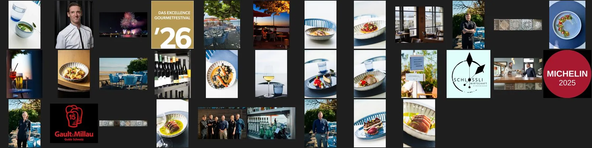
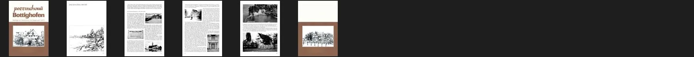
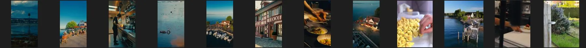
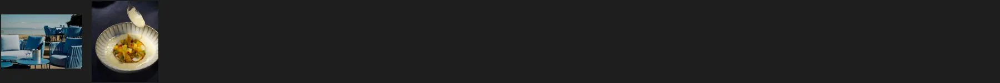
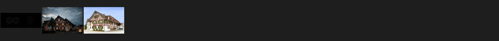
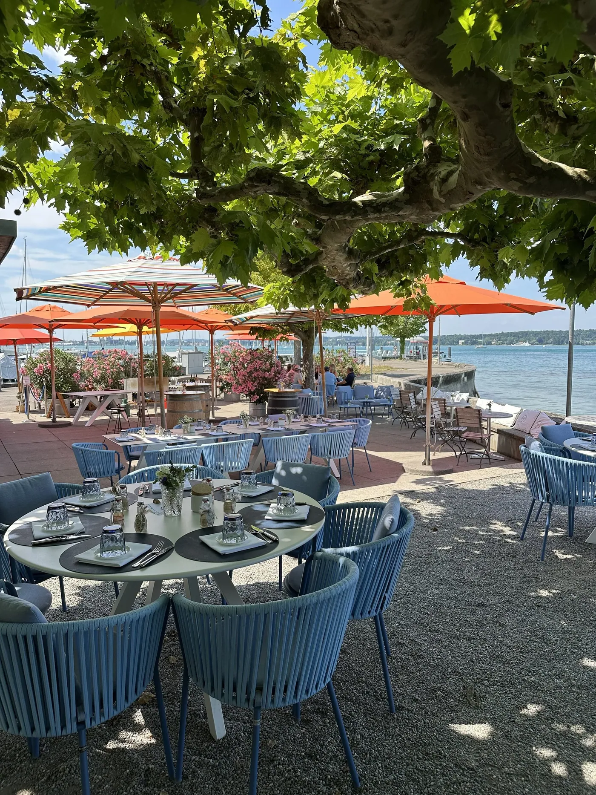
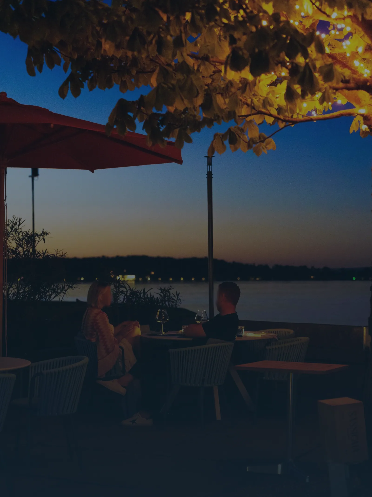
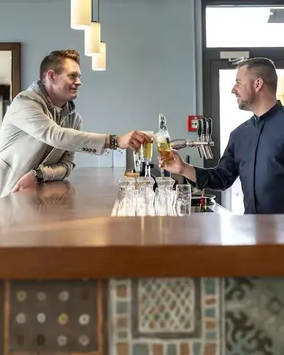
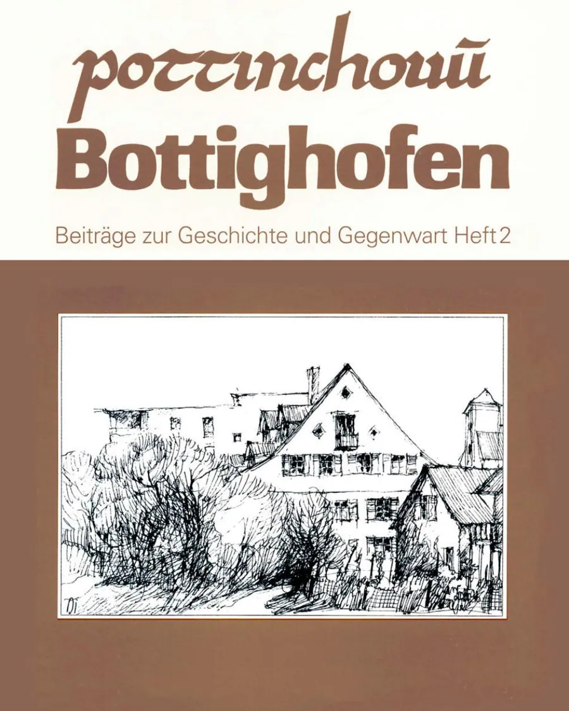

03Sammler · Recherche
Alles, was esüber das Schlössli gibt.
Wirtschaft am Schlössli in Bottighofen: die Seite des Hauses ganz, die Vorgängerin aus dem Web-Archiv, Portale, Instagram, Presse, das Handelsregister und die Gemeindeschrift von 1994 über das Schlössli am See. Jede Angabe mit Quelle, jede Lücke rot. Stand 19. Oktober 2026.
01Der Vorrat je Quelle
Was da ist,und wem es gehört.
Gezählt im Ordner _quelle/ beim Bau dieser Seite. Zu jedem Bildordner gibt es eine herkunft.json mit der Adresse jedes Bildes.
| Quelle | Anzahl | Herkunft | Rechte |
|---|---|---|---|
| Website heute | 33 Bilder · 15 Seiten · 6 PDFs | schloessli-bottighofen.ch, Squarespace, bis 2500 px; Karten vom Oktober 2026 | Haus; laut Impressum Taverne zum Schäfli AG; kein Fotograf in den Dateien |
| Web-Archiv | 15 Seiten | archive.org 2023–2025: Strandwirtschaft Schlössli, «Neueröffnung April 2025» | Vorgängerin: anderer Betrieb; heutige Fassung: Haus |
| Gemeindeschrift 1994 | 1 PDF, 152 Seiten · 6 Seitenbilder | «Die Bottighofer Mühlen und das Schlössli am See», Kapitel per Texterkennung | Gemeinde Bottighofen, nur Anschauung |
| GaultMillau · Michelin | 2 Bilder · Texte · Belege | 15 Punkte an der Quelle, Michelin «plate», Titelbilder 1770 und 1000 px | Verlage / Haus, nur Anschauung |
| Falstaff · Feinschmecker | Texte | 91 von 100 mit Teilnoten; 2,5 von 5 | Verlage, nur zum Nachlesen |
| Schweiz Tourismus | 2 Bilder · Text | Eintrag wie Startseite, nennt noch 14 Punkte | vom Haus geliefert |
| 12 Beiträge | @schloessli_bottighofen, 640 px, ohne Anmeldung | Haus; ein Gemeinschaftsbeitrag @christiankuchler85 | |
| Logo | 1 Datei | transparent 1563 px, gefunden auf der Schäfli-Seite | Haus |
| Presse | 8 Texte | GaultMillau 2025, Tagblatt 2025, Thurgauer Zeitung, Südkurier, Handelsregister, Gemeinde | Verlage, nur zum Nachlesen |
| Aussortiert | 3 Bilder | Haus und Plakette der Taverne zum Schäfli auf «Kontakt» | Schwesterhaus, nie für diese Seite |
| Filme · Booking · TripAdvisor | – | keine Filme gefunden · kein Hotel · Chrome-Erweiterung nicht verbunden | offen |
02Die Bögen
Jedes Bildgegen das Haus geprüft.
Je Quelle ein Bogen. Was nicht zum Schlössli gehört, liegt in eigenen Ordnern.





Das Schlössli auf einer alten Postkarte: «Strand Hotel Schlössli, Bottighofen b/Kreuzlingen». Heute ist es ein Wohnhaus; die Wirtschaft liegt daneben, im ehemaligen Hafenmeistergebäude.
03Noten
Was anderedarüber sagen.
Abgelesen am 19. Oktober 2026, jede an ihrer Quelle. Die GaultMillau-Punkte stehen dort nur als Zeichen einer Symbolschrift; das Zeichen heisst «Points15».
| Portal | Note | Anzahl | Beleg |
|---|---|---|---|
| Google Maps | 4,2 von 5 (62 · 5 · 4 · 1 · 13) | 85 Rezensionen, 138 Fotos | eingebauter Browser |
| GaultMillau | 15 Punkte (Guide 2027); 14 und «Entdeckung des Jahres 2026» im Guide 2026 | – | gaultmillau-punkte-beleg.md · TZ 08.10.2025, 06.10.2026 |
| Guide Michelin | empfohlen, «Favorit der Inspektoren», Selektion 2025 | – | Selektion 2026 am 02.11.2026 |
| Falstaff | 91 von 100 (44 · 19 · 19 · 9) | – | Magazine Switzerland 5/2026 |
| Der Feinschmecker | 2,5 von 5 | – | feinschmecker.de |
| TripAdvisor | offen | offen | Chrome-Erweiterung nicht verbunden |
| Booking.com | betrifft nicht | – | kein Hotel |
04Fakten mit Quelle
Jede Angabemit ihrer Datei.
Auszug aus fakten.json. Preise und Namen stehen dort, wie sie in den Karten des Hauses stehen; die Karten selbst liegen als PDF und als Text bei.
| Angabe | Wert | Quelle |
|---|---|---|
| Name | Wirtschaft am Schlössli | _quelle/website/text/start.md («Willkommen in der Wirtschaft am Schlössli!»), Seitentitel; _quelle/website/text/impressum.md |
| Adresse | Seestrasse 50, 8598 Bottighofen | _quelle/website/text/kontakt.md; GaultMillau, Michelin, Falstaff gleich |
| Lage | «Direkt im Hafen von Bottighofen gelegen mit Blick aufs Wasser und die Alpen»; im ehemaligen Hafenmeistergebäude, das Schlössli daneben ist heute ein Wohnhaus | _quelle/website/text/start.md; _quelle/presse/gemeinde-bottighofen-geschichte.md; _quelle/extern/wikipedia-commons/wikitext-Bottighofen.txt |
| Telefon · Mail | +41 71 688 90 92 · kontakt@schloessli-bottighofen.ch | _quelle/website/text/kontakt.md, impressum.md |
| Betreiberin | CK Gastro Consulting GmbH, Oberdorfstrasse 8, 8556 Wigoltingen, CHE-139.373.932 (eingetragen 29.04.2021, Stammkapital CHF 20’000, Zweck «Beratung im Gastronomiebereich») | _quelle/website/text/impressum.md; _quelle/website/text/agbs.md Ziffer 1; _quelle/presse/handelsregister-2026-10-19.md (Zefix und tg.chregister.ch, 19.10.2026) |
| Pacht | Christian Kuchler hat das Restaurant gepachtet («Pächter Kuchler») Eigentümer der Liegenschaft: offen | _quelle/presse/gaultmillau-zwei-koeniginnen.md (30.03.2025); _quelle/presse/tz-14-punkte.md (08.10.2025, «Pächter und Sternekoch Christian Kuchler») |
| Urheberrechte | «Die Urheber- und alle anderen Rechte an Inhalten, Bildern, Fotos oder anderen Dateien auf der Website gehören ausschliesslich der Taverne zum Schäfli Ag oder den speziell genannten Rechtsinhabern.» | _quelle/website/text/impressum.md |
| Zimmer | keine | keine Zimmer: Seite, GaultMillau, Michelin, Falstaff nennen keine (19.10.2026) |
| Öffnungszeiten | Donnerstag–Montag 11:30–23:00, Dienstag und Mittwoch Ruhetag; Küche à la carte 11:30–13:30 und 18:00–20:00; Karte der Lästermeile den ganzen Tag | _quelle/website/text/kontakt.md (19.10.2026); Falstaff und Schweiz Tourismus gleich |
| Ferien | Ferien 13.–15. November 2026 (Excellence Gourmetkreuzfahrt, «unser Team geschlossen mit an Board») und 22. Dezember 2026 – 10. Februar 2027 | _quelle/website/text/kontakt.md, events-2-1.md (19.10.2026) |
| À la carte | Gerichte 25–70 (Moules frites 25 bis Kalbskotelett 70), sieben davon wahlweise als Hauptgang 40–65; Desserts 13–22 | _quelle/website/pdf-text/Speisekarte-Oktober.txt (PDF vom 30.09.2026) |
| Lunch | 3 Gänge CHF 35 (Kürbissuppe, Risi e bisi, Joghurt Panna Cotta) | _quelle/website/pdf-text/Lunch_261019.txt (PDF vom 18.10.2026); GaultMillau 30.03.2025 «Dreigänger für 35 Franken» |
| Lästermeile | Tapas 7–9, Prato 30, Tarte flambée und Crespelle 20 | _quelle/website/pdf-text/Lastermeile-Homepage-2339.txt (PDF vom 14.10.2026) |
| Bankettmenüs | Frühling 175 · Sommer 185 · Herbst 175 («Aus den Menüs können 3-5 Gerichte ausgewählt werden») | _quelle/website/pdf-text/Bankettmenuvorschlage.txt (PDF vom 29.04.2025) |
| Wein | Weinkarte mit 26 Seiten, Stand 14.10.2026; Schaumwein von 100 bis 1750 (9 l) | _quelle/website/pdf-text/20261014_Weinkarte.txt |
| Anlässe | 4-Hands-Lunch Patrick Stier 170 (22.02.2026), Ehemaligen Lunch 190 (06.09.2026), Kitchen Party im Schäfli 390 | _quelle/website/text/events-2-1.md |
| Räume | «auf zwei Etagen Platz für jeweils bis zu 26 Personen», Seeterrasse, Bar Lästermeile Namen der Etagen: offen | _quelle/website/text/karten.md |
| Lästermeile | Bar «die von drinnen nach draussen führt», Tapas-Karte durchgehend; Hausdrink «Lästerschirmchen» (2025: 15 Franken) | _quelle/website/text/kontakt.md; _quelle/presse/tagblatt-zu-tisch.md (24.04.2025); Michelin: «separate Terrasse an der Yachthafen-Promenade» (_quelle/extern/portale/guide |
| Reservieren | gastronovi, Restaurant 118851; Bankett und Anlässe per Mail-Link | _quelle/website/text/start.md, kontakt.md, karten.md, events-2-1.md |
| Gutschein | Formular «Gutschein» auf der Startseite (Name Käufer, E-Mail, Adresse, Betrag); «Wir senden Ihnen eine Bestätigung, sobald der Gutschein versendet wurde»; keine Bezahlung online | _quelle/website/html/start.html (formFields) |
| Anreise | Auto: «Am Kreisverkehr beim Restaurant Bären Abfahrt in die Seestrasse in Richtung Hafen, über den Bahnübergang … direkt zu unserem Parkplatz»; «ausreichend Parkplätze und eine nahe Anbindung zum Zugverkehr mit dem Bahnhof Bottighofen» | _quelle/website/text/kontakt.md, karten.md |
| Hausregeln | Hunde willkommen (Falstaff «Dogs allowed»; Tagblatt: Wassernapf aus der Champagnerflasche); Zahlung bar, Debit, Kredit, NFC; Gruppen ab 6 Personen nach AGB | _quelle/extern/portale/falstaff-restaurant.md; _quelle/presse/tagblatt-zu-tisch.md; _quelle/website/text/agbs.md Ziffer 3 |
| Team | Monika Huber («Moni») (Küchenchefin) · Theresa Hermann (Patissière) · Jonas Volpert (Gastgeber) · Lukas Siebel (Sous-Chef) · Marco Reisinger (Entremetier) · Ole Sass (Service) | _quelle/website/text/uber-uns.md; Presse |
| Sprachen der Seite | Deutsch; keine Karte in anderer Sprache | Quelltext lang="de-CH", keine weiteren Sprachen (Späher 02); alle Karten nur deutsch |
| Rechtstexte | Impressum, Datenschutz, AGB als Text; Widerruf: keine eigene Seite, Annullation in den AGB | _quelle/website/text/ |
| Zeichen | Logo: Kreis mit zwei Zeigern (Uhr oder Kompass) und Punkten, Schriftzug «SCHLÖSSLI WIRTSCHAFT», darunter «BY CHRISTIAN KUCHLER»; schwarz, transparent 1563 × 1563 px | _quelle/extern/logo/schloessli-logo-transparent.png (von der Schäfli-Seite); _quelle/website/bilder/afd0fc_2b500a48-0faf-4743-ad9a-ccd5e7c54e6d.jpeg (auf Mint, Teilen-Bil |
| Fotografen | offen (kein Name in den Dateien) | _quelle/fotografen-aus-metadaten.json |
| Social | Instagram @schloessli_bottighofen (2’601 Follower, 46 Beiträge); kein Facebook verlinkt, kein YouTube | _quelle/extern/ig/ |
05Geschichte mit Beleg
Ein Pächter am See,schon um 1690.
Nur Jahreszahlen, die eine Quelle hat. Das Kapitel «Das Schlössli am See» liegt als PDF und als Text (Texterkennung) bei; Zitate vor Gebrauch am PDF prüfen. Das Baujahr des Hafenmeistergebäudes steht nirgends.
- 1676Das Kloster Münsterlingen erlaubt dem Untermüller Hafen ein «Haus am See» für seinen Sohn, zuerst «Seeburg» genannt. Erste Bedingung: darin darf nicht gewirtet werden.Gemeindeschrift 1994, S. 104–108
- um 1690Der Sohn setzt trotzdem einen Wirt als Pächter ein, der die Schiffsleute bewirtet; statt eines Wirtshausschilds hängt ein Besen heraus. 1699 verliert er vor der Tagsatzung.Gemeindeschrift 1994, S. 110–111
- 1869Die Fischenz im Konstanzer Trichter wird «einziges privates Fischereirecht am Bodensee» des Schlössli-Besitzers.Gemeindeschrift 1994, S. 122
- 1888«Hotel und Pension Schlössli, Bottighofen, b. Constanz» eröffnet im Juni; später «Strandhotel Schlössli», 1937 renoviert, bis nach 1988.Gemeindeschrift 1994, S. 123–124
- heuteDas Schlössli ist ein Wohnhaus. Die Wirtschaft am Schlössli liegt im ehemaligen Hafenmeistergebäude.Gemeinde Bottighofen; Wikipedia
- 2023/24«Strandwirtschaft Schlössli» der GASTRO GROUP 5 AG am Hafen, mit «Läschtermeile Charte».Web-Archiv
- 2021CK Gastro Consulting GmbH eingetragen (29.04.2021), Christian Kuchler 199 von 200 Anteilen.Handelsregister Thurgau
- 2025Eröffnung am 3. April, Christian Kuchler als Pächter, Küchenchefin Monika Huber, Patissière Theresa Hermann, Gastgeber Jonas Volpert. Im Oktober 14 GaultMillau-Punkte und «Entdeckung des Jahres 2026».GaultMillau 30.03.2025; Thurgauer Zeitung 08.10.2025
- 202615. GaultMillau-Punkt (06.10.2026), Falstaff 91.Thurgauer Zeitung; gaultmillau.ch; falstaff.com

Die Terrasse unter den Platanen, direkt am Wasser: «Die schönste Terrasse am Bodensee», sagt Christian Kuchler. Ein Foto der heutigen Seite, 2500 px.
06Lücken
Was offen ist,in Rot.
Jeder Punkt steht auch in stand.json und auf der Karte. Was nicht öffentlich ist, bleibt offen; nichts davon ist geschätzt.
- TripAdvisor: Note, Anzahl, Fotos und Sprachen nicht gelesen (Chrome mit Claude-Erweiterung nicht verbunden, nach Auftrag nicht anders versucht); ob der Eintrag «Schlössli» d33091733 zur heutigen Wirtschaft gehört, Späher-Wert 3,1 / 9 nur aus der Suchvorschaulist_connected_browsers leer, 19.10.2026; tripadvisor.ch Restaurant_Review-g6908343-d33091733
- Gäste-Sprachen nach Anzahl auf keinem Portal ablesbar; Reihenfolge de, en, fr nur aus Lage und Sprachen der Tourismusbüros abgeleitetGoogle Maps eingeschränkte Ansicht (3 von 85 Rezensionen, alle deutsch), 19.10.2026; _kette/03-sammler/sprachen.json
- Michelin: empfohlen in der Selektion 2025; die Selektion 2026 wird am 02.11.2026 verkündet, dann neu prüfen_quelle/extern/portale/michelin-beleg.md (distinction «plate», «2025 Guide MICHELIN Schweiz»)
- Baujahr und Geschichte des ehemaligen Hafenmeistergebäudes, in dem die Wirtschaft liegt (die Geschichte des Schlössli seit 1676 ist belegt, das Schlössli ist heute ein Wohnhaus)_quelle/presse/gemeinde-bottighofen-geschichte.md; Gemeindeschrift 1994, _quelle/presse/pdf-text/Bottighofen_Heft_2_Schloessli_S103-128_OCR.txt; Wikipedia Bottighofen
- Wem die Liegenschaft gehört und zu welchen Bedingungen Christian Kuchler sie gepachtet hatPresse nennt ihn «Pächter» (_quelle/presse/gaultmillau-zwei-koeniginnen.md, tz-14-punkte.md); Seite, Impressum, Handelsregister, Gemeinde nennen keinen Eigentümer
- Fotografen der Serien «Schloessli_August2025», «2026-05-22 … Schlössli SM», «FHF_», «_DSC»: in den Dateien kein Name; ob das Haus die Bildrechte für eine neue Seite hat_quelle/fotografen-aus-metadaten.json; Impressum «Taverne zum Schäfli Ag oder den speziell genannten Rechtsinhabern»
- Grosse Bildoriginale: Squarespace liefert höchstens 2500 px, die Originale bis 5504 × 8256 px liegen beim Haus oder den Fotografen_quelle/website/bilder/ (Abmessungen); Späher data-image-dimensions
- Namen und Plätze der zwei Bankett-Etagen und der Terrasse; kein Foto der Etagen_quelle/website/text/karten.md («zwei Etagen … bis zu 26 Personen»); Bögen in _quelle/_boegen/
- Patissière Theresa Hermann: GaultMillau 2025 und 2026 nennen sie, «Über uns» nicht_quelle/extern/portale/gaultmillau.md; _quelle/presse/gaultmillau-zwei-koeniginnen.md; _quelle/website/text/uber-uns.md
- Bedeutung des Zeichens (Kreis mit zwei Zeigern) nirgends erklärt_quelle/extern/logo/; Seite, Presse, Instagram-Profil
- Filme: kein eigener Kanal, keine Filme Dritter gefunden; die Instagram-Reels lassen sich ohne Anmeldung nicht laden_quelle/video/liste-gesucht.md
- Thurgauer Zeitung 08.10.2025 und 06.10.2026, Südkurier 23.12.2025: nur Anriss (Bezahlschranke)_quelle/presse/tz-14-punkte.md, tz-weiterer-punkt.md, suedkurier-fruehstueck.md
- Squarespace: gebuchter Plan, Franken-Preis, wer die Seite baut oder pflegt, unterschriebener Vertrag (vom Späher übernommen)_kette/02-spaeher/stand.json
- Halter der Adresse schloessli-bottighofen.ch (vom Späher übernommen)Namensserver ns14.net, Whois für .ch nicht öffentlich (Späher 18.10.2026)
- Aktionäre der Taverne zum Schäfli AG (Inhaberin der Urheberrechte laut Impressum): stehen im Aktienbuch, nicht öffentlich; Verwaltungsrat aus der Schäfli-Sammlung belegtTaverne zum Schäfli Wigoltingen/_quelle/presse/handelsregister-2026-10-18.md; _quelle/presse/handelsregister-2026-10-19.md
07Nicht bekommen, Rechte, Sprachen
Ehrlich,was fehlt.
Inhalte und Bilder der Seite gehören laut Impressum der Taverne zum Schäfli AG «oder den speziell genannten Rechtsinhabern»; in den Dateien steht kein Fotograf. Ob das Haus die Rechte für eine neue Seite hat, ist offen. Feuerwerk, Gastkoch-Porträt und Festival-Logo gehören Dritten; Portal-, Presse- und Heftbilder nur zur Anschauung.
- TripAdvisorChrome mit der Claude-Erweiterung war nicht verbunden; nach Auftrag nicht anders versucht.
- Google MapsOhne Anmeldung nur Note, Verteilung, Anzahl und Zahl der Fotos; drei Rezensionen sichtbar, Sprachen der übrigen nicht.
- InstagramNur die zwölf sichtbaren Beiträge in 640 px, Reels nur als Standbild. Facebook ist nicht verlinkt.
- Grosse OriginaleSquarespace liefert höchstens 2500 px. Grösser nur beim Haus oder den Fotografen.
- FilmeKein eigener Kanal, keine Filme Dritter gefunden.
- PresseThurgauer Zeitung und Südkurier nur bis zur Bezahlschranke.
| Sprachen | Was | Quelle |
|---|---|---|
| Gäste | offen (keine Zahlen je Sprache ablesbar) | sprachen.json |
| Seite heute | de | Quelltext lang="de-CH", keine hreflang (Späher 02); Karten nur deutsch |
| Ort | de, en, fr | Thurgau Bodensee Tourismus https://thurgau-bodensee.ch (hreflang de, en, fr, 19.10.2026); Gemeinde Bottighofen https://www.bottighofen.ch nur de (lang="de-CH") |
| Schweiz Tourismus | de, en, fr, it, es, nl, pt | myswitzerland.com, hreflang |
| Reihenfolge | de → en → fr | de: Sprache des Hauses, der sichtbaren Gäste-Texte und der Nachbarn in Konstanz; en: zweite Sprache von Thurgau Bodensee Tourismus und Schweiz Tourismus; fr: dritte Sprac |

08Weiter
Das Material liegt. Station 4 kann lesen.
Alles liegt in _quelle/ im Projektordner, die Übersicht als Seite, die Fakten in fakten.json, die Gäste-Sprachen in sprachen.json, der Bau-Prompt neben dem Material. Die Lücken oben bleiben offen, bis eine Quelle sie hergibt. Das Schwesterhaus Taverne zum Schäfli ist eigens gesammelt.

